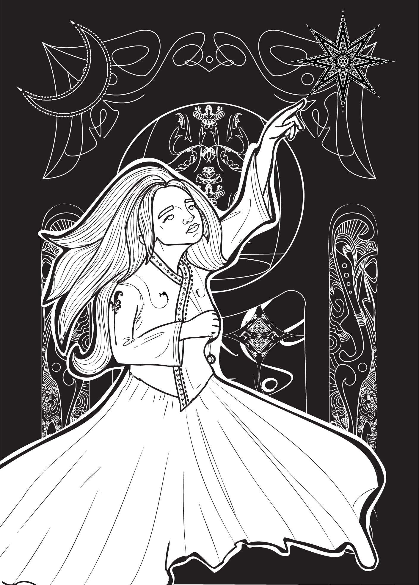

ART NOUVEAU COMMISSION

This piece was created as a gift for a friend who supported me at my time in Bukit Lawang, Indonesia. Whilst volunteering there, I lived in the outhouses they had built with their husband and often spent days and afternoons chatting about everything with them, sharing stories and food together. I am forever grateful to them both. The style is greatly inspired a few things - the clearest being art nouveau, but also how art nouveau has grown into card art such as tarot and, one of my hobbies, Magic the Gathering.
I want to explore this style much more and hope to one day make either tarot or MTG art of the style.